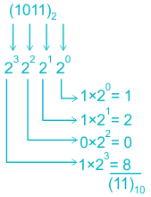
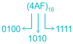
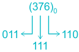
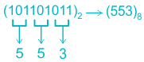
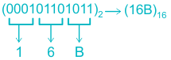
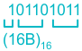
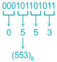
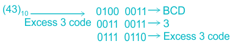
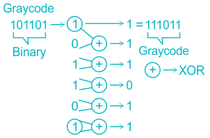
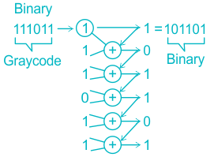

03 Number System & Representation
Number System
Number system is a method of Counting.
General Representation
(N) b Where, N = No. to be represented b = base or radix Range = (0 to b – 1) i.e. N can be b/w (0 to b – 1)
Commonly used Number system
Decimal No. System Binary Number System Octal Number System Hexadecimal Number System
Decimal No. System
Base i.e. ‘b’ is 10 (N) 10 for eg. (301) 10 Range (0 – 9) i.e. N can contain digits b/w (0 – 9) Value of digit depends upon its position
*LSD is least Significant Bit.
Binary Number System
Base i.e. ‘b’ is 2 (N) 2 i.e. (1011) 2 Range (0 – 1) i.e. N can contain only (0, 1) This 0, 1 in Binary system is known as bits Group of 4 bits = 1 Nibble Group of 8 bits = 1 byte Follows positional value system i.e. Binary number can be converted to Decimal equivalent by summary the weight of various position in binary number which contain bit ‘1’

Octal Number System
Base i.e. ‘b’ is 8 (N) 8 i.e. (367) 8 Range (0 – 7) i.e. N can contain digits b/w (0 – 7) Octal Number is converted to Decimal equivalent by summery together the positional weight of each octal digit.
Hexadecimal Number System
Base i.e. ‘b’ is 16

Also known as Alpha Numeric Number system Range (0 – 15)
Number System Conversion
Decimal to any Number system
Decimal Number
Integer part – Divide the integer part by ‘base’ {2, 16, 8} & write the remainder until
quotient obtained is zero.
Fractional part – Multiply the fraction part by ‘base’ {2, 16, 8} & write the integer part
till we get fraction equal to zero or we get the repeated pattern.
Decimal to Binary
(43.90625) 10 → (101011 ⋅ 111010) 2 Remainder → 43 ÷ 2 1 (LSB) → ↑ 21 ÷ 2 1 → 10 ÷ 2 0 → 5 ÷ 2 1 → 2 ÷ 2 0 → 1 ÷ 2 1 (MSB) (43) 10 → (101011) 2
‘Integer’ → ↓ 0.90625 × 2 = 1.8125 1 → 0.8125 × 2 = 1.625 1
Decimal to octal
→ 0.625 × 2 = 1.25 1 (43.30) 10 → (53.23146) 8 → 0.25 × 2 = 0.5 0 Reminder → 0.5 × 2 = 1.0 1 → (43) 10 → (53) 8 43÷8→3 5÷8→5 ↑ 0.0 × 2 = 0.0 0 Now fraction become ‘0’ (0.90625) 10 → (0.111010) 2 → 2 ↓ (0.30) 10 → (0.23146) 8 0.30 × 8 = 2.40 → 3 0.40 × 8 = 3.20 → 1 0.20 × 8 = 1.60 → 4 0.60 × 8 = 4.80 → 6 0.80 × 8 = 6.40 0.40 × 8 = 3.20 } Repeat
Any Number system to Decimal Number system
Binary to Decimal
3 + 1×2 2 + 0×2 1 + 1×2 0 = 13. 01→0×2 −1 + 1×2 −2 = 0 + 1 ↗ 1101→1×2
- 1101. 01 () 2↘ 4 = 0. 25
(1101.01) 2 ⇒ 13 + 0.25 = (13.25) 10
Octal to Decimal
1 + 6×8° = 38 0. 2→2×8 −1 = 0. 25 ↗ 46→4×8
- 46. 2 () 8↘
(46.2) 8 ⇒ 38 + 0.25 = (38.25) 10
Hexadecimal to Decimal
1 + 7×10° = 231 0. 2 = 2×16 −1 = 2 16 = 1 𝐸7. 2 () 16 ↗ ↘ 𝐸7 = 𝐸×16 8 = 0. 125 = 231 + 0.125 = (231.125) 10
Hexadecimal to Binary
Replace hexadecimal Number by its 4 bit binary equivalent.

(4AF) 16 → (0100 1010 1111) 2
Octal to Binary
→ Replace Octal Number by its 3 bit binary equivalent
(376) 8 → (011 111 110) 2

Binary to Octal
Group the binary bit stream in to pairs of ‘3’ by starting it from LSB

Binary to Hexadecimal
Group the binary bit stream into pairs of ‘4’ by starting it from LSB

Octal to Hexadecimal
→ Convert octal to Binary number → Perform Binary to Hexadecimal conversion 553 () 8 ↓ 101 101 011 () 2 ↓ 𝐵𝑖𝑛𝑎𝑟𝑦 𝑒𝑞𝑢𝑖𝑣𝑎𝑙𝑒𝑛𝑡 𝐵𝑖𝑛𝑎𝑟𝑦 𝑡𝑜 𝐻𝑒𝑥

Hexadecimal to Octal
→ Convert Hexadecimal to Binary Number → Perform Binary to octal conversion
16𝐵 () 16 ↓ 0001 0110 1011 () 2 ↓ 𝐵𝑖𝑛𝑎𝑟𝑦 𝑒𝑞𝑢𝑖𝑣𝑎𝑙𝑒𝑛𝑡 𝐵𝑖𝑛𝑎𝑟𝑦 𝑡𝑜 𝑂𝑐𝑡𝑎𝑙

Signal Number Representation
This is useful for the representation of negative Number Mostly used are: → Signal Magnitude Representation → 1 ’s complement representation → 2 ’s complement Representation
| Signed Magnitude | 1stComplement | 2ndComplement |
|---|---|---|
| 1) MSB is a sign bit For -ve no., sign bit = 1 For +ve no., sign bit = 0 | -ve no. is represented in 1st complement form | +ve no. is represented in 2st complement form. |
| 2) Two pattern for ‘0’ | Two pattern for ‘0’ | Single pattern for ‘0’ |
| 3) Use different hardware for addition and subtraction | Use same hardware for addition and subtraction | Use same hardware for addition and subtraction |
| 4) Weighted No. System | Non weighted | Weighted no. system |
| 5) Do not assign weight to sign bit | - | Assign weight to sign bit i.e., -ve weight to sign bit +ve weight to rest bits |
| 𝑛−1 𝑛−1 6) − 2 − 1 𝑡𝑜 + 2 − 1 | 𝑛−1 𝑛−1 − 2 𝑡𝑜 + 2 − 1 | 𝑛−1 𝑛−1 − 2 𝑡𝑜 2 − 1 |
| 7) Sign bit does not involve in computation | Sign bit involve in computation | Sign bit involve in computation. |
Trick:
For signed number extension
| Signed Magnitude | 1stand 2ndcomplement |
|---|---|
| →put ‘0’ b/w sign bit and successive bit | →copy ‘sign bit’ b/w sign bit and successive bit |
Codes
| Codes | ||
|---|---|---|
| Non Binary | Binary | alphanumeric |
| Morse code | →Gray code →Excess 3 code →BCD code →8421 code | →ASCII code →EBCDIC code |
Weighted Codes
→ 8421 → BCD → Binary, Hex, oct
Non weighted codes
→ excess 3 → Gray code
Self-complementary codes
→ They are weighted code with sum of weight = 9 and They have property that 9’s complement of decimal no. is obtained directly by complementing each bit in the pattern.
Eg. 2421, excess 3, 8 4 2 1, 5211, 4311, 3321
Trick:
Excess 3 is the only Non-weighted code which is self-complementing.
BCD code (Binary code Decimal)
→ Each digit of decimal Number is represented by binary equivalent
→ Also known as 8421 code or 4 bit binary code.
→ during arithmetic operation of invalid BCD is present then add 0110 to get correct result 46 () 10 𝐵𝐶𝐷→ 0100 0110⏟ 𝐵𝐶𝐷 Excess 3 code → BCD + 3 = Excess 3 code For e.g.

Gray code
→ Also known as cyclic code, Minimum error code, Reflective code.
→ In this code, only one bit in the code group changes when going from one step to next.
Binary to Gray code

Gray code to Binary

Points to Remember
Gray codes are not suitable for arithmetic operations. Excess 3 code arithmetic operation used to perform BCD subtraction Largest no. that can be represented using N bits = (2 N 1) 10 BCD code is used in counters, Digit clocks etc.